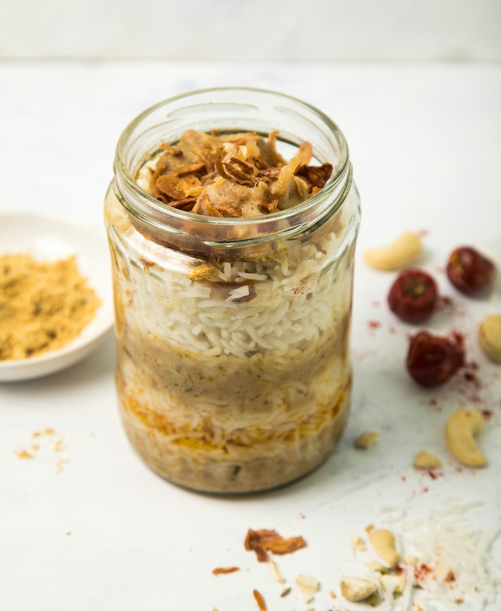
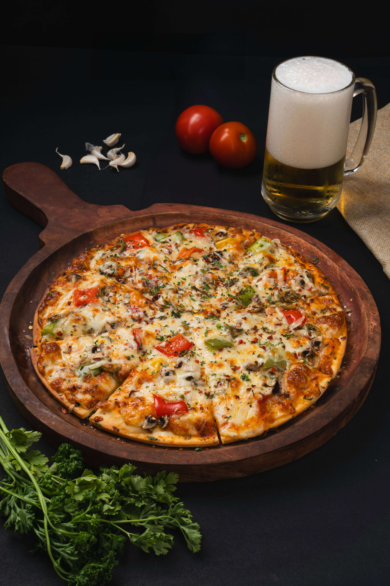

Welcome to Our Delicious Food🙏



Our Features
-
Puchkas
Puchkas are a popular Indian street food, also known as golgappa or pani puri, filled with spicy water, potatoes, and chickpeas.
-
Noodle Soup
Noodle soup is a comforting dish made with flavorful broth, noodles, and a variety of vegetables or meats.
-
Stew Beef
Stew beef is a hearty dish featuring tender beef chunks slow-cooked with vegetables and savory spices, resulting in a rich and flavorful meal.